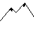
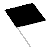
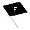
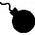
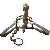

Anleitung
Wilkommen bei Startegisio, dem taktischen Kampfspiel.
Hier soll euch eine kleine Hilfestellung gegeben werden, wie denn dieses Spiel funktioniert.
Ziel des Spiels ist es die gegnerische Flagge einzunehmen, oder alle Figuren des Gegners unschädlich zu machen.
Wie man das macht, zeigen wir euch jetzt:
Zu Beginn muss jeder Spieler seine Figuren und Gegenstände auf dem Spielfeld positionieren.
Der rote Spieler besetzt die unteren vier Reihen, der blaue die oberen vier.
Beim Setzen sollte darauf geachtet werden, dass eigene Figuren eigene Gegenstände überspringen,
aber nicht mit Gegenständen auf einem Feld stehen können!
Auf einem Spielfeld kann also nur eine eigene Figur oder ein eigener Gegenstand stehen.
Im Verlauf kann ein Spieler nur Figuren und Objekte des Gegners sehen, wenn diese sich im
Sichtfeld mindestens einer eigenen Figur befinden.

Dies ist eine Landkarte auf der Ihr euch bewegt, jeder Spieler zieht pro Zug eine Figur.
 | Dieses Feld ist Wiese, darauf können sich alle Figuren bewegen. |
 | Dieses Feld ist Gebirge, darauf können sich nur Bergsteiger bewegen. |
 | Dieses Feld ist Wasser, darin können sich nur Taucher bewegen. |
Dies sind die Gegebenheiten in jeder möglichen Landkarte.
Kommen wir nun zu den einzelnen Figuren:
 | Kämpfer: Mit ihm könnt Ihr immer 2 Schritte in einem Zug ziehen, horizontal und waagerecht. Er kann alle direkt an ihn angrenzende Felder einsehen und ist die kampfstärkste Figur. |
|  | Bergsteiger: Mit ihm könnt Ihr immer 1 Schritt in einem Zug ziehen, horizontal und waagerecht. Der Bergsteiger kann sich auf der Wiese und auf Gebirge bewegen. |
| Taucher: Mit ihm könnt Ihr immer 1 Schritt in einem Zug ziehen, horizontal und waagerecht. Der Taucher kann sich auf der Wiese und im Wasser bewegen. |
|
| Mineur: Mit ihm könnt Ihr immer 1 Schritt in einem Zug ziehen, horizontal und waagerecht. Liegen Bomben auf dem Spielfeld, kann der Mineur diese unschädlich machen. Der Mineur kann als einzige Figur gegnerische Bomben sehen. |
|
| Sanitäter: Mit ihm könnt Ihr immer 1 Schritt in einem Zug ziehen, horizontal, waagerecht und auch diagonal. Der Sanitäter kann Fallen unschädlich machen und eigene gefangene Figuren aus Fallen befreien. |
|
| Spion: Mit ihm könnt Ihr bis zu 3 Schritte in einem Zug ziehen, horizontal und waagerecht. Dabei sind allerdings nur die ersten beiden Felder ersichtlich. Der Spion ist die kampfschwächste Figur, ist dafür aber für alle gegnerischen Figuren unsichtbar. |
Neben den Figuren gibt es auch 4 Objekte:
Objekte
|  | Flagge: Die gegnerische Flagge muss eingenommen, die eigene natürlich
geschützt werden. Das Spiel endet mit der Flaggeneinnahme. |
|  | Fake-Flagge: Für den gegnerischen Spieler ist es nicht möglich zwischen
der echten und der Fake-Flagge zu unterscheiden. Bei Einnahme nimmt die Figur das Feld ein, die Fake-Flagge wird vom Feld genommen und das Spiel geht normal weiter. |
|  | Bombe: Sie wird auf einem einzelnen Spielfeld positioniert. Betritt eine Figur ein Bombenfeld, explodiert die Bombe und Figur und Bombe werden vom Spielfeld genommen. Aussnahme bildet der Mineur, der natürlich diese entfernt und das Spielfeld einnimmt. Er ist auch die einzige Figur, die die Bombe sehen kann. |
|  | Falle: Sie wird auf einem einzelnen Spielfeld positioniert. Betritt eine Figur
ein Fallenfeld, wird diese Figur gefangen. Für den Rest des Spiels kann sich diese Figur nicht mehr selbst aus der Falle befreien. Handelt es sich bei der Figur um einen Sanitäter wird die Falle direkt entschärft und vom Feld entfernt. Ein Sanitäter kann eigene Figuren aus der gegnerischen Falle befreien und gleichzeitig die Falle entfernen. In einer eigenen Falle gefangene gegnerische Figur kann direkt von jeder eigenen Figur durch Betreten des Feldes getötet werden. Die Falle wird dabei neu errichtet. |
Nun kennt Ihr das Feld, die Figuren und die Gegenstände. Kommen wir zum letzten Bestandteil, dem Kampf:
Gekämpft wird immer wenn zwei Figuren aufeinander treffen.
Dies kann für einen Spieler manchmal überraschend sein,
da er zuvor nicht immer die gegnerische Figur sehen kann.
Hier seht Ihr eine Übersicht über die Fertigkeiten der einzelnen Figuren:
| Figur | Angriff | Abwehr | Kämpfer | Schlagen, Treten, Messerstich, Schiessen | Schlag abwehren, Tritt abwehren, Messerstich ausweichen, vor Schuss in Deckung gehen |
Bergsteiger | Schlagen, Treten, Messerstich | Schlag abwehren, Tritt abwehren, Messerstich ausweichen, vor Schuss in Deckung gehen |
Taucher | Schlagen, Treten, Messerstich | Schlag abwehren, Tritt abwehren, Messerstich ausweichen, vor Schuss in Deckung gehen |
Mineur | Schlagen, Treten, Messerstich | Schlag abwehren, Tritt abwehren, Messerstich ausweichen, vor Schuss in Deckung gehen |
Sanitäter | Schlagen, Treten, Messerstich | Schlag abwehren, Tritt abwehren Messerstich ausweichen |
Spion | Schlagen, Treten | Schlag abwehren, Tritt abwehren, Messerstich ausweichen |
Beim Kampf wählen die Spieler nacheinander ihren Angriff und ihre Abwehr.
Daraufhin wird der Ausgang des Kampfes berechnet.
Endet dieser unentschieden, wird erneut gekämpft.
Der Sieger des Kampfes steht anschliessend auf dem Kampffeld,
der Verlierer wird vom Feld genommen.
Das war es an Regeln, viel Spass beim Spielen!